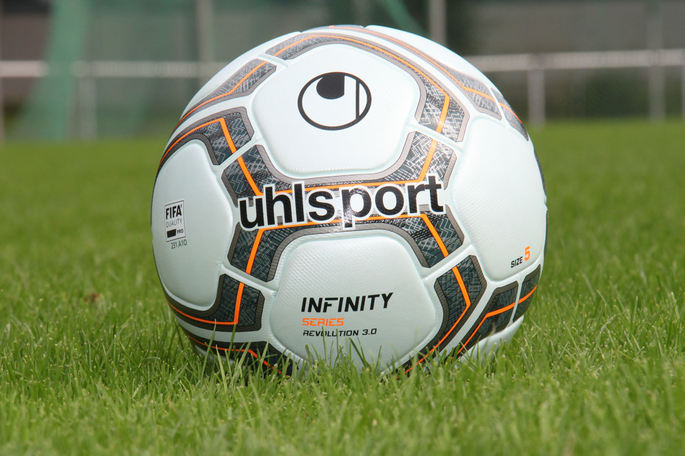

A Copa Libertadores de 2026 reserva um capítulo especial para dois dos clubes mais tradicionais do futebol brasileiro. Fluminense e Palmeiras se enfrentam nesta quarta-feira, 14 de outubro, às 21h30 (horário de Brasília), no Maracanã, com transmissão pela Globo, geTV e Paramount+.
Mais do que uma disputa por vaga na final, o confronto representa o encontro de duas histórias vencedoras. O Fluminense tenta repetir a conquista de 2023, enquanto o Palmeiras busca seu quarto título na competição continental.
O primeiro duelo acontece no mesmo estádio em que o Tricolor conquistou sua primeira Libertadores. A partida de volta está marcada para 21 de outubro, no Nubank Parque, em São Paulo. O vencedor da eliminatória enfrentará Flamengo ou Estudiantes na decisão, programada para 28 de novembro, no Estádio Centenário, em Montevidéu, no Uruguai.
Confronto após 55 anos
Apesar da frequência dos confrontos entre Fluminense e Palmeiras no futebol brasileiro, os encontros pela Libertadores são raros. Antes da semifinal de 2026, os clubes haviam se enfrentado apenas duas vezes na principal competição de clubes da América do Sul.
Os dois jogos aconteceram em 1971, durante a fase de grupos. Na primeira partida, disputada no Pacaembu, o Fluminense venceu por 2 a 0, com dois gols de Flávio. O triunfo marcou a estreia do clube carioca na história da Libertadores.
O Palmeiras respondeu no segundo encontro daquela edição. Jogando no Maracanã, venceu por 3 a 1 e garantiu a classificação para a fase seguinte, em um regulamento no qual apenas o primeiro colocado de cada grupo avançava.
A semifinal de 2026 representa, portanto, o primeiro confronto eliminatório entre os clubes na história da Libertadores.
O reencontro também acontece no ano do centenário do primeiro jogo entre as equipes, disputado em 30 de maio de 1926. Na ocasião, o então Palestra Itália venceu por 3 a 2, em amistoso realizado no Parque Antarctica.
Cem anos depois daquele primeiro encontro e 55 anos após os duelos continentais, a rivalidade ganha um capítulo de importância ainda maior.
A campanha do Fluminense até a semifinal
O Tricolor iniciou a fase de grupos com apenas um ponto nas três primeiras rodadas. A reação aconteceu na segunda metade da etapa classificatória, quando somou sete dos últimos nove pontos disponíveis e conquistou a segunda colocação do Grupo C.
A vitória por 3 a 1 sobre o Deportivo La Guaira, na última rodada, encerrou uma recuperação importante. Aquele resultado garantiu a continuidade de uma trajetória que havia começado de forma difícil, como mostrou a classificação do Fluminense às oitavas de final da Libertadores 2026.
No mata-mata, o nível de exigência aumentou.
Nas oitavas de final, o adversário foi o Independiente Rivadavia, da Argentina. Depois de um empate por 0 a 0 no Maracanã, o Fluminense voltou a empatar, desta vez por 1 a 1, em Mendoza. Kevin Serna marcou o gol tricolor, mas Álex Arce igualou o placar nos acréscimos, de pênalti.
A classificação veio nas penalidades, com vitória por 5 a 4 com duas defesas de Fábio.
Nas quartas de final, contra o Platense, o Fluminense construiu uma vantagem importante no Maracanã. Venceu por 2 a 0, com gols de Nonato e Hulk, e levou o resultado favorável para a Argentina.
O jogo de volta foi dramático. O Platense abriu 2 a 0 e igualou o confronto no placar agregado, mas Agustín Canobbio marcou no segundo tempo, após assistência de Hulk. Mesmo derrotado por 2 a 1, o Fluminense avançou com o agregado de 3 a 2.
A campanha também passou por uma mudança no comando técnico. Marcão assumiu durante as oitavas de final, após a saída de Luis Zubeldía, e conduziu a equipe até a semifinal.
Palmeiras chega à semifinal pela 13ª vez
Se o Fluminense construiu sua trajetória de 2026 com recuperação e resistência, o Verdão chega à semifinal sustentado por uma longa sequência de participações nas fases decisivas da Libertadores.
O clube disputa sua décima terceira semifinal continental, um recorde entre os representantes brasileiros. Também alcançou a fase eliminatória em dez edições consecutivas, um indicador da regularidade construída pelo time nas últimas temporadas.
Na edição de 2026, o Palmeiras terminou a primeira fase classificado pelo Grupo F e enfrentou o Cerro Porteño nas oitavas.
O primeiro jogo terminou empatado por 1 a 1. Na volta, em Assunção, Gustavo Gómez marcou o gol da vitória por 1 a 0, resultado que garantiu a classificação por 2 a 1 no agregado.
Nas quartas de final, o adversário foi a LDU de Quito.
O Palmeiras venceu o primeiro jogo por 1 a 0, com gol de Agustín Giay. No Equador, a equipe chegou a ficar em situação favorável na eliminatória, mas sofreu a virada para 3 a 2 nos minutos finais, resultado que deixou o placar agregado empatado em 3 a 3.
A classificação foi decidida nos pênaltis. Carlos Miguel defendeu duas cobranças, e o Palmeiras venceu por 4 a 3, assegurando presença entre os quatro melhores times da competição.
Os personagens centrais do confronto
Entre os elementos que tornam Fluminense x Palmeiras especialmente interessante está a presença de Jhon Arias.
O colombiano participou da conquista histórica da Libertadores de 2023 pelo Fluminense e construiu uma identificação importante com o clube carioca. Agora defendendo o Palmeiras, reencontra o antigo time em uma semifinal continental.
Arias se tornou uma das alternativas ofensivas do Verdão e já teve participação importante na campanha de 2026. Nas oitavas de final, por exemplo, deu a assistência para Gustavo Gómez marcar o gol da classificação contra o Cerro Porteño.
O reencontro com o Maracanã adiciona um componente emocional à eliminatória. Para o Fluminense, Arias representa uma lembrança direta da geração campeã de 2023. Para o Palmeiras, é um jogador com experiência continental e capacidade de participar das decisões ofensivas.
Outro nome importante é Flaco López, que chega ao confronto como uma das referências do ataque palmeirense.
Pelo lado tricolor, Hulk aparece como protagonista depois de participar diretamente dos três gols marcados pelo Fluminense nas quartas de final contra o Platense.
O duelo reúne, portanto, jogadores capazes de influenciar o confronto por caminhos diferentes: força física, construção de jogadas, movimentação ofensiva e experiência em jogos eliminatórios.
Os desfalques e os aspectos táticos da semifinal
A partida de ida apresenta situações relevantes nas duas equipes.
O Palmeiras não terá Abel Ferreira à beira do campo. O treinador português cumpre suspensão após receber cartão vermelho no confronto com a LDU. Com isso, João Martins ficará responsável por comandar o time durante o jogo no Maracanã.
O atacante Vitor Roque também é desfalque. Ele sofreu uma entorse no tornozelo direito na vitória por 4 a 1 sobre o Corinthians, pelo Campeonato Brasileiro, e não se recuperou a tempo.
Em contrapartida, Gustavo Gómez retorna após cumprir suspensão nas quartas de final.
O Palmeiras chega utilizando uma formação com três zagueiros, alternativa que oferece maior proteção defensiva e permite a participação dos jogadores de lado de campo na construção ofensiva.
O Fluminense, por sua vez, tem na experiência de seus jogadores um fator importante. Thiago Silva lidera a defesa, enquanto Ganso pode oferecer controle de ritmo e qualidade de passe. Hulk representa uma opção de finalização e construção ofensiva.
Para o Tricolor, o desafio será aproveitar o mando de campo sem oferecer espaços excessivos para os contra-ataques. Já o Palmeiras precisará administrar a pressão inicial e buscar oportunidades para chegar ao segundo jogo em situação favorável.
Prováveis escalações
Times chegam ao primeiro jogo da semifinal da Libertadores com situações diferentes na montagem das equipes.
Provável Fluminense:
Fábio; Guga, Thiago Silva, Millán e Guilherme Arana (Renê); Martinelli, Nonato (Hércules) e Ganso; Canobbio, Savarino (Serna) e Hulk.
Técnico: Marcão.
O Fluminense deve atuar no esquema 4-3-3. Guilherme Arana é o favorito para começar na lateral esquerda, já que Renê ainda sente dores no tornozelo. No meio-campo, Nonato disputa posição com Hércules, enquanto Savarino e Kevin Serna aparecem como alternativas para o setor ofensivo.
Os desfalques são Germán Cano, Alisson e Matheus Reis, que estão em processo de transição, além de John Kennedy, lesionado.
Provável Palmeiras:
Carlos Miguel; Murilo, Gustavo Gómez e Alexander Barboza; Giay, Marlon Freitas, Lucas Evangelista, Andreas Pereira e Piquerez; Jhon Arias e Flaco López.
Técnico: João Martins
O Palmeiras deve manter o sistema com três zagueiros, utilizando uma formação 3-5-2. Gustavo Gómez retorna à defesa após cumprir suspensão nas quartas de final diante da LDU..
As formações são prováveis e estão sujeitas a alterações até a divulgação das escalações oficiais, prevista para antes do início da partida.
A arbitragem será de Facundo Tello, da Argentina.
A busca por mais uma Glória Eterna
A semifinal coloca frente a frente dois clubes que conhecem o significado de conquistar a principal competição continental.
O Fluminense venceu sua primeira Libertadores em 2023, quando derrotou o Boca Juniors por 2 a 1, na prorrogação, no Maracanã. Germán Cano e John Kennedy marcaram os gols da conquista tricolor.
Aquele título deu ao clube uma posição especial em sua história internacional e transformou o estádio carioca em um símbolo da maior conquista continental das Laranjeiras.
O Palmeiras tem três títulos de Libertadores.
O primeiro veio em 1999, enquanto as conquistas de 2020 e 2021 consolidaram uma das fases mais vitoriosas da história recente do clube.
Sob o comando de Abel Ferreira, o Verdão conquistou duas Libertadores consecutivas e voltou à decisão em 2025, quando terminou com o vice-campeonato diante do Flamengo.
A semifinal de 2026 representa mais uma oportunidade de ampliar esse legado.
Uma decisão que conecta diferentes gerações
Fluminense e Palmeiras chegam à semifinal da Libertadores de 2026 carregando trajetórias diferentes, mas com um objetivo comum: disputar o título mais importante do futebol sul-americano.
O confronto revive os duelos de 1971, recupera uma rivalidade centenária e reúne personagens ligados a conquistas recentes, como Fábio, Thiago Silva, Gustavo Gómez e Jhon Arias.
A história também acrescenta uma característica especial à disputa. Os únicos dois encontros anteriores pela Libertadores terminaram com vitórias dos visitantes, um retrospecto que torna ainda mais interessante a distribuição dos mandos de campo em 2026.
Independentemente de quem conquistar a classificação, a semifinal representa um novo capítulo na história continental dos dois clubes. Para o Fluminense, é a oportunidade de retornar à decisão depois do título de 2023. Para o Palmeiras, mais uma chance de transformar sua regularidade na competição em uma quarta conquista.
Mais de meio século depois do primeiro confronto entre as equipes na Libertadores, Fluminense e Palmeiras voltam a se encontrar em um cenário ainda mais decisivo: desta vez, apenas um deles seguirá na luta pela Glória Eterna.